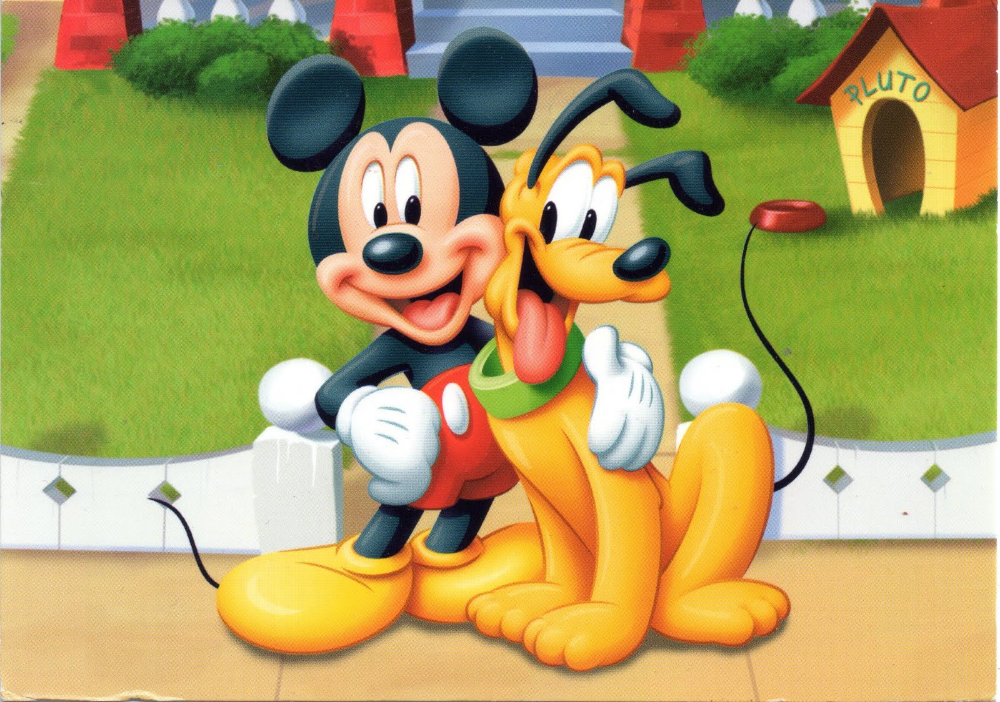

1)Первое имя Микки Мауса – Монтимер. Однако супруга Диснея, Лиллиан, услышав о таком решение, заявила, что «Монтимер» звучит слишком помпезно. До выпуска первого мультфильма, мышонок получил имя Микки Мауса.
2)Пластика Микки Мауса – движения, походка – заимствована у короля комедии Чарли Чаплина. Такую идею подсказала Уолту Диснею его жена Лиллиан.
3)Особенной чертой Микки Мауса является то, что его уши всегда смотрят вперед, независимо от положения головы. Такой графический прием использовал художник Аб Айверкс, работавший над созданием Микки вместе с Уолтом Диснеем.
4)Мультфильм «Протяни лапу» стал первым мультиком с Микки Маусом и его верным другом – Плуто, получившим премию «Оскар» в 1941 году.
5)В феврале 2014 года британский художник Дэмьен Херст перевел образ Микки Мауса на свой фирменный «точечный» язык. Знаменитый художник сократил основные формы персонажа до нескольких обычных точек.
6)Журнал Forbes назвал Микки Мауса самым дорогим мультипликационным персонажем, оценив его стоимость в 5,8 миллиардов долларов
Цитаты знаменитых людей о Микки Маусе
Микки-Маус по праву считается одной из величайших фигур XX века. Он — миляга, друг, член семьи, и в то же время — настоящая икона. Когда он машет вам рукой, просто невозможно не улыбнуться. Когда Микки-Маус рядом, все становится немного светлее.
Я встречал многих женщин. Но я люблю Микки-Мауса больше, чем любую из них.
Странный Забавный Тип-Топ танец с Микки
Нажми на мячик
Заключительная мелодия мультфильмов
| Микки и друзья | Микки и Минни | Жители клуба Микки Мауса | Микки и Плуто |
 |
 |
 |
 |